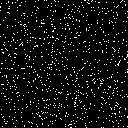
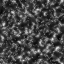
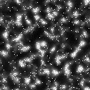
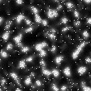
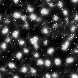
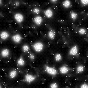
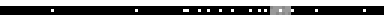
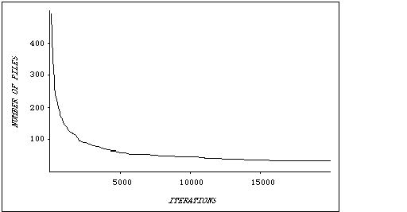

t = 50
t = 50
back to my project
This page is copied from http://el.www.media.mit.edu/groups/el/Papers/mres/JLS/JLS-1.0.html,
no infringement is intended.
Abstract
In recent years, there has been a growing fascination with decentralized systems and self-organizing phenomena. Increasingly, people are choosing decentralized models for the organizations and technologies that they construct in the world, and for the theories that they construct about the world. But even as decentralized ideas spread through the culture, there is a deep-seated resistance to such ideas. In trying to understand patterns in the world, people often assume centralized control where none exists (for example, assuming that a "leader bird" guides the rest of the flock). To probe how people think about decentralized systems, and to help them develop new ways of thinking about such systems, I developed a programmable modeling environment (called StarLogo) with which people can easily create and experiment with decentralized systems. StarLogo allows users to control the actions and interactions of thousands of artificial "creatures" on the computer screen. I describe three StarLogo projects created by high-school students. Based on my observations of these (and other) students, I analyze the nature of the centralized mindset, and I discuss how people, through engagement with new types of computational tools and activities, can begin to move beyond the centralized mindset.
1. Introduction
During the past decade, there has been a surge of scientific interest in the so-called "sciences of complexity"--the investigation of how complex phenomena can arise from simple interactions among simple parts. New research projects on chaos, self-organization, adaptive systems, nonlinear dynamics, and artificial life are all part of this growing interest in complex systems. The interest has even spread from the scientific community to popular culture, with the publication of best-selling books about research into complex systems (e.g., Gleick, 1987; Pagels, 1988; Levy, 1992; Waldrop, 1992).
The sciences of complexity present not only scientific challenges but educational and epistemological ones, raising questions about how people view and make sense of the world. In particular, these new sciences tend to highlight decentralized models of the world--in contrast to traditional scientific models based on centralized control and centralized causes. Scientists are reexamining their models of biological systems, social systems, and technological systems. For example, traditional theories of bird flocking were based on the idea of a "leader" bird at the front of the flock. Newer theories view bird flocks as decentralized and self-organizing (e.g., Heppner & Grenander, 1990). Each bird in the flock follows a set of simple rules, reacting to the movements of the birds nearby it. Orderly flock patterns arise from these simple, local interactions. None of the birds has a sense of the overall flock pattern. The bird in front is not a "leader" in any meaningful sense--it just happens to end up there.
But even as the influence of decentralized ideas grows in the scientific community, there is a deep-seated resistance to such ideas. Most people seem to have strong attachments to centralized ways of thinking. When people see patterns in the world (like a flock of birds), they generally assume that there is some type of centralized control (a leader of the flock). According to this way of thinking, a pattern can exist only if someone (or something) creates and orchestrates the pattern. Everything must have a single cause, an ultimate controlling factor. In general, decentralized approaches are ignored, undervalued, and overlooked. Centralized solutions are seen as the solution. The widespread resistance to evolutionary theories is an example: Many people still insist that someone or something must have explicitly designed the complex, orderly structures that characterize living systems. They resist the idea that complexity can be formed through a decentralized process of variation and selection.
This paper reports on the beginnings of a research effort to study centralized and decentralized ways of thinking about complex systems. The effort is based on a constructionist approach to learning research (Papert, 1991). Broadly, the research effort aims to identify people's intuitive models for understanding complex systems, and to develop tools and activities that both challenge and leverage those intuitions to help people develop a richer set of models for thinking about complexity.
The research effort focuses particularly on pre-college students. It consists of several interwoven threads:
* Probing students' conceptions. How do students think about and make sense of complex phenomena? To what extent do they assume centralized causes and centralized control? In the cognitive-science community, there is a rich literature on "folk physics," examining how people think about concepts from Newtonian physics (e.g., McCloskey, 1983; diSessa, 1988). By analogy, this project might be dubbed "folk systems science," aiming to understand how people think about the behaviors of systems. The goal is to understand the "pieces of knowledge" or "knowledge fragments" (diSessa, 1988) that underlie students' conceptions of systems, and to examine how these intuitive models present obstacles and opportunities for learning.
* Developing new conceptual tools. In recent years, scientists have developed a variety of analytic techniques for describing complex systems and making accurate predictions about the behaviors of such systems. The goal here is very different: to develop heuristics, metaphors, and qualitative tools to help people think about decentralized systems in new ways.
* Developing new computational tools. New computational tools can be useful both for probing how people think about particular ideas and for providing a framework to help people develop new ways of thinking. In this case, the goal is to develop computational tools that allow people to explore, manipulate, and construct decentralized systems--for example, enabling students to create and manipulate computational models of ant colonies, market economies, or immune systems. A major design challenge is to create computational tools that highlight and make salient core intellectual ideas about decentralized systems, so that people naturally engage in thinking about these ideas (and develop new representations for thinking about decentralized systems) as they make use of the tools.
This paper describes the first steps in this enterprise. In particular, it describes a new programmable modeling environment, called StarLogo, that allows students to construct and experiment with decentralized systems. The paper describes the ideas underlying the design of StarLogo, and it presents three short case studies of high-school students working on StarLogo projects. These case studies provide an initial glimpse of how students think about complex systems, and how they begin to think about such systems in new ways as they become engaged with new computational tools and activities. Based on the experiences of the high-school students, the paper proposes a set of heuristics for thinking about decentralized systems.
2. Tools for Thinking about Decentralization
In some ways, people already have a great deal of experience with decentralized systems: they observe decentralized systems in the natural world, and they participate in decentralized social systems in their lives. But, of course, observation and participation do not necessarily lead to strong intuitions or deep understanding. People observed bird flocks for thousands of years before anyone suggested that flocks are leader-less. And people participate in traffic jams without much understanding of the decentralized interactions that cause the jams. Observation and participation are not enough. People need a richer sense of engagement with decentralized systems. One way to do that is to give people opportunities to design decentralized systems.
At first glance, this approach to the study of decentralized systems might seem like a contradiction. After all, how can you design decentralized phenomena? By definition, decentralized patterns are created without a centralized designer. But there are ways to use design in the study of decentralized systems. Imagine that you could design the behaviors of lots of individual components--then observe the patterns that result from all of the interactions. This is a different sort of design: You control the actions of the parts, not of the whole. You are acting as a designer, but the resulting patterns are not designed.
Over the years, computer scientists have developed a variety of computational tools that can be used for this type of "decentralized design." Cellular automata represent one example (Toffoli & Margolus, 1987). In cellular automata, a virtual world is divided into a grid of "cells." Each cell holds a certain amount of "state." (On the computer screen, different states are usually represented by different colors.) In the simplest cases, each cell might hold just a single piece of state, indicating whether the cell is "alive" or "dead." There is a transition rule that determines how each cell changes from one generation to the next. Transition rules are typically based on the states of a cell's "neighbors." For example, a cell might become "alive" if the majority of its neighboring cells are alive. Each cell executes the same rule, over and over. Cellular automata have proved to be an extraordinarily rich framework for exploring self-organizing phenomena. Simple rules for each cell sometimes lead to complex and unexpected large-scale structures.
To engage students in thinking about decentralized systems, I wanted to provide an environment similar to cellular automata, but more connected to students' interests and experiences. While cellular automata are well-suited for computer hackers and mathematicians, they seem ill-suited for people who have less experience (or less interest in) manipulating abstract systems. The objects and operations in cellular automata are not familiar to most people. The idea of writing "transition rules" for "cells" is not an idea that most people can relate to.
Instead, I decided to create an environment based on the familiar ideas of "creatures" and "colonies." The goal was to enable students to investigate the ways that colony-level behaviors (such as bird flocks or ant foraging trails) can arise from interactions among individual creatures. (I am using the terms "creature" and "colony" rather broadly. On a highway, each car can be considered a "creature," and a traffic jam can be considered the "colony.") Another important goal was to enable students to build their own models, not merely manipulate pre-existing models.
Logo seemed like a good starting point for my computational system (Papert, 1980; Harvey, 1985). The traditional Logo "turtle" can be used to represent almost any type of object in the world: an ant in a colony, a car in a traffic jam, an antibody in the immune system, or a molecule in a gas. But traditional versions of the Logo language are missing several key features that are needed for explorations of colony-type behaviors. So I developed a new, extended version of Logo. This new version of Logo, called StarLogo, extends Logo in three major ways (Resnick, 1991, 1994).
First, StarLogo has many more turtles. While commercial versions of Logo typically have only a few turtles, StarLogo has thousands of turtles, and all of the turtles can perform their actions at the same time, in parallel. (The initial version of StarLogo was implemented on a massively-parallel computer, the Connection Machine. We have since implemented StarLogo on traditional sequential computers by simulating parallelism.) For many colony-type explorations, having a large number of turtles is not just a nicety, it is a necessity. In many cases, the behavior of a colony changes qualitatively when the number of creatures is increased. An ant colony with 10 ants might not be able to make a stable pheromone trail to a food source, whereas a colony with 100 ants (following the exact same rules) might.
Second, StarLogo turtles have better "senses." The traditional Logo turtle was designed primarily as a "drawing turtle," for creating geometric shapes and exploring geometric ideas. But the StarLogo turtle is more of a "behavioral turtle." StarLogo turtles come equipped with "senses." They can detect (and distinguish) other turtles nearby, and they can "sniff" scents in the world. Such turtle-turtle and turtle-world interactions are essential for creating and experimenting with decentralized and self-organizing phenomena. Parallelism alone is not enough. If each turtle just acts on its own, without any interactions, interesting colony-level behaviors will generally not arise.
Third, StarLogo reifies the turtles' world. In traditional versions of Logo, the turtles' world does not have many distinguishing features. The world is simply a place where the turtles draw with their "pens." Each pixel of the world has a single piece of state information--its color. StarLogo attaches a much higher status to the turtles' world. The world is divided into small square sections called patches. The patches have many of the same capabilities as turtles, except that they can not move. Each patch can hold an arbitrary variety of information. For example, if the turtles are programmed to release a "chemical" as they move, each patch can keep track of the amount of chemical that has been released within its borders. Patches can execute StarLogo commands, just as turtles do. For example, each patch could diffuse some of its "chemical" into neighboring patches, or it could grow "food" based on the level of chemical within its borders. Thus, the environment is given a status equal to that of the creatures inhabiting it.
StarLogo programs can be conceptualized as turtles moving on top of (and interacting with) a cellular-automata grid. All types of interactions are possible: turtle-turtle, turtle-patch, and patch-patch interactions. StarLogo places special emphasis on local interactions--that is, interactions among turtles and patches that are spatially near one another. Thus, StarLogo is well-suited for explorations of self-organizing phenomena, in which large-scale patterns arise from local interactions. In addition, the massively parallel nature of StarLogo makes it well-suited for explorations of probabilistic and statistical concepts--and studies of people's thinking about these concepts (Wilensky, 1993).
Figure 1 shows a StarLogo simulation of creatures aggregating into clusters. In this example, each creature emits a chemical pheromone, and it also moves in the direction where the pheromone is strongest (that is, it "follows the gradient" of the pheromone). At the same time, the patches cause the pheromone to diffuse and evaporate. With this simple strategy, the creatures quickly aggregate into clusters--demonstrating that aggregation can arise from a decentralized mechanism.
|  |  |  |
| t = 0 | t = 20 | t = 40 |
|  |  |  |
| t = 60 | t = 80 | t = 100 |
| Figure 1: Creatures aggregating into clusters | ||
In some ways, the ideas underlying StarLogo parallel the ideas underlying the early versions of Logo itself. In the late 1960's, Logo aimed to make then-new ideas from the computer-science community (like procedural abstraction and recursion) accessible to a larger number of users (Papert, 1980). Similarly, StarLogo aims to make 1990's ideas from computer science (like massive parallelism) accessible to a larger audience. And whereas Logo introduced a new object (the turtle) to facilitate explorations of particular mathematical/scientific ideas, such as differential geometry (Abelson & diSessa, 1980), StarLogo introduces another new object (the patch) to facilitate explorations of other mathematical/scientific ideas (such as self-organization).
3. Student Projects
About a dozen high-school students participated in the initial phase of this research project (using a version of StarLogo on the Connection Machine). The students had widely varying levels of experience with computers. The students came from a variety of ethnic backgrounds--roughly half were immigrants or first-generation Americans. About two-thirds of the students were male, one-third female. All of the participants shared a willingness to come to MIT to work on an experimental project. All student names used in this paper are pseudonyms.
Students typically came to MIT for eight to ten sessions, each lasting 60 to 90 minutes. Most students worked together in pairs. I worked directly with the students, suggesting projects, asking questions, challenging assumptions, helping with programming, and encouraging students to reflect on their experiences as they worked with StarLogo. Computer interactions were saved in computer files, and all discussions were recorded on audio tape.
In the early sessions, I typically showed students existing StarLogo programs. The students experimented with the programs, trying different parameters and making slight modifications of the programs. As the sessions progressed, I encouraged students to develop their own projects ideas and construct their own models, based on personal interests. This section describes three StarLogo projects created by the students.
3.1 Traffic Jams
Ari and Fadhil were students at a public high-school in the Boston area. Both enjoyed working with computers, but neither had a very strong mathematical or scientific background. At the time Ari and Fadhil started working with StarLogo, they were also taking a driver's education class. Each had turned 16 years old a short time before, and they were excited about getting their driver's licenses. Much of their conversation focused on cars. When I gave Ari and Fadhil a collection of articles to read, a Scientific American article titled "Vehicular Traffic Flow" (Herman & Gardels, 1963) captured their attention.
Traffic flow is rich domain for studying collective behavior. Interactions among cars in a traffic flow can lead to surprising group phenomena. Consider a long road with no cross streets or intersections. What if we added some traffic lights along the road? The traffic lights would seem to serve no constructive purpose. It would be natural to assume that the traffic lights would reduce the overall traffic throughput (number of cars per unit time). But in some situations, additional traffic lights actually improve overall traffic throughput. The New York City Port Authority, for example, found that it could increase traffic throughput in the Holland Tunnel by 6 percent by deliberately stopping some cars before they entered the tunnel (Herman & Gardels, 1963).
Traditional studies of traffic flow rely on sophisticated analytic techniques (from fields like queuing theory). But many of the same traffic phenomena can be explored with simple StarLogo programs. To get started, Ari and Fadhil decided to create a one-lane highway. (Later, they experimented with multiple lanes.) Ari suggested adding a police radar trap somewhere along the road, to catch cars going above the speed limit. But he also wanted each car to have its own radar detector, so that cars would know to slow down when they approached the radar trap.
After some discussion, Ari and Fadhil decided that each StarLogo turtle/car should follow three basic rules:
t = 0
t = 10
t = 20
t = 30
t = 40
 t = 50
t = 60
t = 70
Figure 2: Traffic jam caused by radar trap (shaded area)
(Cars move left to right)
I asked Ari and Fadhil what would happen if only some of the cars had radar detectors. Ari predicted that only some of the cars would slow down for the radar trap. Fadhil had a different idea: "The ones that have radar detectors will slow down, which will cause the other ones to slow down." Fadhil was right. The students modified the StarLogo program so that only 25 percent of the cars had radar detectors. The result: the traffic flow looked exactly the same as when all of the cars had radar detectors.
t = 0
t = 10
t = 20
t = 30
t = 40
t = 50
t = 60
t = 70
Figure 3: Traffic jam without radar trap
(Cars move left to right, but jam moves right to left)
What if none of the cars had radar detectors--or, equivalently, if the radar trap were removed entirely? With no radar trap, the cars would be controlled by just two simple rules: if you see another car close ahead, slow down; if not, speed up. The rules could not be much simpler. At first, Fadhil predicted that the traffic flow would become uniform: cars would be evenly spaced, traveling at a constant speed. Without the radar trap, he reasoned, what could cause a jam? But when the students ran the program, a traffic jam formed (Figure 3). Along parts of the road, the cars were tightly packed and moving slowly. Elsewhere, they were spread out and moving at the speed limit.
Ari and Fadhil were surprised. And when I showed Ari and Fadhil's program to other high-school students, they too were surprised. In general, the students expected the cars to end up evenly spaced along the highway, separated by equal distances. Several of them talked about the cars reaching an "equilibrium," characterized by equal spacing. No one expected a traffic jam to form. Some of their predictions:
Emily: [The cars will] just speed along, just keep going along...they will end up staggered, in intervals.Frank: Nothing will be wrong with it. Cars will just go...There's no obstacles. The cars will just keep going, and that's it.
Ramesh: They will probably adjust themselves to a uniform distance from each other.
When I ran the simulation, and traffic jams began to form, the students were shocked. In their comments, most students revealed a strong commitment to the idea that some type of "seed" (like an accident or a broken bridge) is needed to start a traffic jam. Perhaps Frank expressed it best: "I didn't think there would be any problem, since there was nothing there." If there is nothing there--if there is no seed--there should not be a traffic jam. Traffic jams do not just happen; they must have localizable causes. And the cause must come from outside the system (not from the cars themselves). Some researchers who study systems talk about exogenous (external) and endogenous (internal) factors affecting the behavior of a system. In the minds of the students, patterns (such as traffic jams) can be formed only by exogenous factors.
Fadhil suggested that the jams were caused by differences in the initial speeds of the cars. So the students changed the StarLogo program, starting all of the cars at the exact same speed. But the jams still formed. Fadhil quickly understood. At the beginning of the program, the cars were placed at random positions on the road. Random positioning led to uneven spacing between the cars, and uneven spacing could also provide the "seed" from which a traffic jam could form. Fadhil explained: "Some of the cars start closer to other cars. Like, four spaces between two of them, and two spaces between others. A car that's only two spaces behind another car slows down, then the one behind it slows down."
Next, they changed the program so that the cars were evenly spaced. Sure enough, no traffic jams formed. All of the cars uniformly accelerated up to the speed limit. But Ari and Fadhil recognized that such a situation would be difficult to set up in the real world. The distances between the cars had to be just right, and the cars had to start at exactly the same time--like a platoon of soldiers starting to march in unison.
3.2 Termites and Wood Chips
Termites are among the master architects of the animal world. On the plains of Africa, termites construct giant mound-like nests rising more than 10 feet tall, thousands of times taller than the termites themselves. Inside the mounds are intricate networks of tunnels and chambers. Each termite colony has a queen. But, as in ant colonies, the termite queen does not "tell" the termite workers what to do. On the termite construction site, there is no construction foreman, no one in charge of the master plan. Rather, each termite carries out a relatively simple task. Termites are practically blind, so they must interact with each other (and with the world around them) primarily through their senses of touch and smell. From local interactions among thousands of termites, impressive structures emerge.
The global-from-local nature of termite constructions makes them well-suited for StarLogo explorations. Callie, one of the high-school students, worked on a simple form of termite construction: she programmed a set of termites to collect wood chips and put them into piles. At the start of the program, wood chips were scattered randomly throughout the termites' world. The challenge was to make the termites organize the wood chips into a few, orderly piles.
Callie and I worked together on the project. We started with a very simple strategy, programming each individual termite to obey the following rules:
We tried the program, and (much to our surprise) it worked quite well. At first, the termites gathered the wood chips into hundreds of small piles. But gradually, the number of piles declined, and the number of wood chips in each pile increased (see Figure 4). After 2000 iterations, there were about 100 piles, with an average of 15 wood chips in each pile. After 10,000 iterations, there were fewer than 50 piles left, with an average of 30 wood chips in each pile. After 20,000 iterations, only 34 piles remained, with an average of 44 wood chips in each pile. The process was rather slow, and it was frustrating to watch, as termites often carried wood chips away from well-established piles. But, all in all, the program worked quite well.
Why did it work? As we watched the program, it suddenly seemed obvious. Imagine what happens when the termites (by chance) remove all of the wood chips from a particular pile. Because all of the wood chips are gone from that spot, termites will never again drop wood chips there. So the pile has no way of restarting.
As long as a pile exists, its size is a two-way street: it can either grow or shrink. But the existence of a pile is a one-way street: once it is gone, it is gone forever. Thus, a pile is somewhat analogous to a species of creatures in the real world. As long as the species exists, the number of individuals in the species can go up or down. But once all of the individuals are gone, the species is extinct, gone forever. In these cases, zero is a "trapped state": once the number of creatures in a species (or the number of wood chips in a pile) goes to zero, it can never rebound.
Of course, the analogy between species and piles breaks down in some ways. New species are sometimes created, as offshoots of existing species. But in the termite program, there is no way to create a new pile. The program starts with roughly 2000 wood chips. These wood chips can be viewed as 2000 "piles," each with a single wood chip. As the program runs, some piles disappear, and no new piles are created. So the total number of piles decreases monotonically.

Figure 4
3.3 Ant Cemeteries
Two high-school students, Frank and Ramesh, decided to work on a StarLogo project involving ants. In their own (real) ant farms, they had observed ants gathering their dead colleagues into neat piles. They wondered: how does that happen?
This question is similar to the question that Callie and I explored, with ants taking the place of termites, and dead ants taking the place of wood chips. But Frank and Ramesh approached the problem very differently than Callie and I. Whereas Callie and I focused on decentralized strategies, Frank and Ramesh gravitated toward centralized ones.
Ramesh's first idea was that each ant could create its own cemetery, on the spot where the ant found its first dead ant. This strategy avoids all of the "messiness" of interaction among the ants. But at a cost: the ant colony will end up with as many cemeteries as there are live ants. In effect, Ramesh's strategy turns every ant into a "leader" of its own one-member colony.
Frank suggested an alternative idea: "There could be some chemical. Each turtle will look for where the chemical is. And then all turtles will put the dead-ants around the patch where the chemical is." One patch, with chemical, acts as the seed from which a cemetery will grow. I pointed out a problem with this approach.
Mitchel: So there would be a few designated places with chemical. Someone or something has to decide on those places. Who is going to make that decision?Frank: Maybe God? [Laughs]
With his laugh, Frank indicated that he was aware of the problem. He knew that he could not rely on "God" to create the "seed" for the ant cemetery. But who else (or what else) could create the seed for the cemetery? After a while, Frank shifted to another idea: "Maybe the leader of this group of ants tells them where to put the dead ants." With this idea, control would still be centralized, but a "leader" would be in control instead of "God." (Interestingly, Frank did not say: "Maybe the group needs a leader to decide where..." Rather, he just assumed that the group must have a leader. The only question was what the leader should do.)
Ramesh also liked the idea of a single pre-designated cemetery. When I suggested that the ants might not need a pre-designated cemetery, Ramesh rejected the idea: "Why would an ant try to gather other dead ants if there is no reason for it? If you make just one place, then the ants have a goal to put dead ants in one place." So, according to Ramesh, a pre-designated cemetery is needed to give the ants a goal, a reason for collecting dead ants. In Ramesh's world view, there is no place for "unintended" patterns, arising from decentralized interactions. For an ordered cemetery to form, according to Ramesh, the ants must view the creation of the cemetery as an explicit goal.
Frank and Ramesh wrote several StarLogo programs based on the fixed-cemetery idea. They developed a nice strategy to help live ants find dead ants more quickly: each dead ant emitted a chemical scent, and each live ant (when not carrying a dead ant) followed the gradient of the scent. In some versions, each live ant "knew" exactly where the cemetery was. After picking up a dead ant, the ant would head directly toward the cemetery. In other versions, the ant would wander randomly until it bumped into the cemetery.
After a while, I encouraged Frank and Ramesh to consider strategies without a fixed, pre-existing cemetery. For a while, they considered a strategy similar to the one Callie and I used with the termites: live ants should pick dead ants, and put them down near other dead ants. But Frank and Ramesh were very concerned about ants removing dead-ants from already-existing piles.
Ramesh: Once the ants place them [the dead ants], we have to set a rule that they don't get picked up again...You could have one ant trying to create a pile, and another ant trying to destroy it... You can't break up a pile. It has to keep getting bigger.
Callie and I had similar worries before trying out the strategy in the termite project. But Frank and Ramesh carried their concerns to an extreme, insisting on what might be called a "monotonic imperative": piles must always grow and never shrink. They were reluctant to even try the strategy. They were sure that it was doomed to failure. Eventually, Frank and Ramesh created a decentralized solution, but only after a great deal of resistance.
4. The Centralized Mindset
In working on their StarLogo projects, many students showed a strong inclination toward centralized thinking, a phenomenon I call the centralized mindset. In the traffic project, students assumed that some centralized influence (such as a radar trap or a broken bridge) must underlie the formation of traffic jams. In their minds, a jam can not happen if there is "nothing there." They could not imagine a traffic jam arising from simple, decentralized interactions among cars. In the ant-cemetery project, Frank and Ramesh developed a range of centralized strategies. In some cases, they relied on a "leader ant" to tell the other ants where to put the dead bodies. In other cases, they argued for a pre-designated cemetery spot. They could not imagine the cemeteries arising from decentralized interactions among the ants.
In general, when students observed patterns or structures in StarLogo programs, they assumed (at least initially) that patterns were created either by lead or by seed. That is, they assumed that a leader orchestrated the pattern (e.g., the "leader ant," or the bird at the front of the flock), or they assumed that some seed (some pre-existing, built-in inhomogeneity in the environment) gave rise to the pattern, much as a grain of sand gives rise to a pearl.
Psychologist David Leiser, in his studies of children's understanding of economic concepts, has found a similar preference for centralized explanations. In interviews with Israeli children between 8 and 15 years old, Leiser (1983) found that nearly half of the children assumed that the government sets all prices and pays all salaries. Even children who said that employers pay salaries often believed that the government provides the money for the salaries. A significant majority of the students assumed that the government pays the increased salaries after a strike. And many younger children had the seemingly contradictory belief that the government is also responsible for organizing strikes. As Leiser writes: "The child finds it easier to refer unexplained phenomena to the deliberate actions of a clearly defined entity, such as the government, than to impersonal `market forces.'"
The centralized mindset is not just a misconception of the scientifically naive. A bias toward centralized theories can be seen throughout the history of science, with scientists remaining committed to centralized explanations, even in the face of discrediting evidence. The history of research on slime-mold cells, as told by Evelyn Fox Keller (1985), provides a striking example. At certain stages of their life cycle, slime-mold cells gather together into clusters. For many years, scientists believed that the aggregation process was coordinated by specialized slime-mold cells, known as "founder" or "pacemaker" cells. According to this theory, each pacemaker cell sends out a chemical signal, telling other slime-mold cells to gather around it, resulting in a cluster. In 1970, Keller and Segel (1970) proposed an alternative model, showing how slime-mold cells can aggregate without any specialized cells. Nevertheless, for the following decade, other researchers continued to assume that special pacemaker cells were required to initiate the aggregation process. As Keller (1985) writes, with an air of disbelief: "The pacemaker view was embraced with a degree of enthusiasm that suggests that this question was in some sense foreclosed." By the early 1980's, based on further research by Cohen and Hagan (1981), researchers began to accept the idea of aggregation among homogeneous cells, without any pacemaker. But the decade-long resistance serves as some indication of the strength of the centralized mindset.
In some ways, it is not surprising that people have such strong commitments to centralized approaches. Many phenomena in the world are, in fact, organized by a central designer. These phenomena act to reinforce the centralized mindset. When people see neat rows of corn in a field, they assume (correctly) that the corn was planted by a farmer. When people watch a ballet, they assume (correctly) that the movements of the dancers were planned by a choreographer. When people see a watch, they assume (correctly) that it was designed by a watchmaker.
Moreover, most people participate in social systems (such as families and school classrooms) where power and authority are very centralized. These hierarchical systems serve as strong models. Many people are probably unaware that other types of organization are even possible. In an earlier research project, I developed a programming language (called MultiLogo) based on "agents" that communicated with one another. In using the language, children invariably put one of the agents "in charge" of the others. One student explicitly referred to the agent in charge as "the teacher." Another referred to it as "the mother" (Resnick, 1990).
Perhaps most important, our intuitions about systems in the world are deeply influenced by our conceptions of ourselves. The human mind is composed of thousands of interacting entities (e.g., Minsky, 1987), but each of us experiences our own self as a singular entity. This is a very convenient, perhaps necessary, illusion for surviving in the world. When I do something, whether I'm painting a picture or organizing a party, I feel as if "I" am playing the role of the "central actor." It feels like there is one entity in charge: me. So it is quite natural that I should expect most systems to involve a central actor, or some entity that is in charge. The centralized mindset might be viewed as one aspect (and a lasting remnant) of the egocentrism that Piaget identified in early childhood.
5. Decentralized Thinking
The initial case studies of students working on StarLogo projects provide strong evidence of the centralized mindset. As students began working with StarLogo, they almost always assumed centralized causes in the patterns they observed, and they almost always imposed centralized control when they wanted to create patterns.
But as students continued to work on StarLogo projects, most of them began to develop new ways of thinking about decentralization. In almost all cases, they developed an appreciation for and a fascination with decentralized systems. At one point, while we were struggling to get our termite program working, I asked Callie if we should give up on our decentralized approach and program the termites to take their wood chips to pre-designated spots. She quickly dismissed this suggestion:
Mitchel: We could write the program so that the termites know where the piles are. As soon as a termite picks up a wood chip, it could just go to the pile and put it down.Callie: Oh, that's boring!
Mitchel: Why do you think that's boring?
Callie: Cause you're telling them what to do.
Mitchel: Is this more like the way it would be in the real world?
Callie: Yeah. You would almost know what to expect if you tell them to go to a particular spot and put it down. You know that there will be three piles. Whereas here, you don't know how many mounds there are going to be. Or if the number of mounds will increase or decrease. Or things like that... This way, they [the termites] made the piles by themselves. It wasn't like they [the piles] were artificially put in.
For Callie, pre-programmed behavior, even if effective, was "boring." Callie preferred the decentralized approach since it made the termites seem more independent ("they made the piles by themselves") and less predictable ("you don't know how many mounds there are going to be").
Over time, other students shared Callie's fascination with decentralization, though they often struggled in their efforts to use decentralized strategies in analyzing and constructing new systems. As I worked with students, I assembled a list of "guiding heuristics" that students used as they began to develop richer models of decentralized phenomena. These heuristics are not very "strong." They are not "rules" for making sense of decentralized systems. Rather, they are loose collections of ideas associated with decentralized thinking. Pedagogically, they serve as good discussion points for provoking people to think about decentralization. They also serve as a type of measuring stick for conceptual change: as students worked on StarLogo projects, they gradually began to integrate these heuristics into their own thinking and discourse. In this section, I discuss five of these guiding heuristics.
* Positive Feedback Isn't Always Negative
When people think about the scientific idea of positive feedback, they typically think of the screeching sound that results when a microphone is placed near a speaker. Positive feedback is viewed as a destructive force, making things spiral out of control. By contrast, negative feedback is viewed as very useful, keeping things under control. Negative feedback is symbolized by the thermostat, keeping room temperature at a desired level by turning the heater on and off as needed.
When I asked high-school students about positive feedback, most were not familiar with the term, but they were certainly familiar with the concept. When I explained what I meant by positive feedback, students quickly generated examples involving something getting out of control, often with destructive consequences. One student talked about scratching a mosquito bite, which made the bite itch even more, so she scratched it some more, which made it itch even more, and so on. Another student talked about stock-market crashes: a few people start selling, which makes more people start selling, which makes even more people start selling, and so on.
Despite these negative images, positive feedback often plays a crucial role in decentralized phenomena. Economist Brian Arthur (1990) points to the geographic distribution of cities and industries as an example of a self-organizing process driven by positive feedback. Once a small nucleus of high-technology electronics companies started in Santa Clara County south of San Francisco, an infrastructure developed to serve the needs of those companies. That infrastructure encouraged even more electronics companies to locate in Santa Clara County, which encouraged the development of an even more robust infrastructure. And thus, Silicon Valley was born.
For some students who used StarLogo, the idea of positive feedback provided a new way of looking at their world. One day, one student came to me excitedly. He had been in downtown Boston at lunch time, and he had a vision. He imagined two people walking into a deli to buy lunch.
Once they get their food, they don't eat it there. They bring it back with them. Other people on the street smell the sandwiches and see the deli bag, and they say, `Hey, maybe I'll go to the deli for lunch today!" They were just walking down the street, minding their own business, and all of the sudden they want to go to the deli. As more people go to the deli, there's even more smell and more bags. So more people go to the deli. But then the deli runs out of food. There's no more smell on the street from the sandwiches. So no one else goes to the deli.
* Randomness Can Help Create Order
Like positive feedback, randomness has a bad image. Most people see randomness as annoying at best, destructive at worst. They view randomness in opposition to order: randomness undoes order, it makes things disorderly.
In fact, randomness plays an important role in creating order in many self-organizing systems. As discussed earlier, people often assume that "seeds" are needed to initiate patterns and structures. In general, this is a useful intuition. The problem is that most people have too narrow a conception of "seeds." They think only of preexisting inhomogeneities in the environment--like a broken bridge on the highway, or a piece of food in an ant's world.
This narrow view of seeds causes misintuitions. In self-organizing systems, seeds are neither preexisting nor externally imposed. Rather, self-organizing systems often create their own seeds. It is here that randomness plays a crucial role. Random fluctuations act as the "seeds" from which patterns and structures grow. Randomness creates the initial seeds, then positive feedback makes the seeds grow. For example, the differing velocities of cars on a highway create the seeds from which traffic jams can grow.
* A Flock Isn't a Big Bird
In trying to make sense of decentralized systems and self-organizing phenomena, the idea of levels is critically important. Interactions among objects at one level give rise to new types of objects at another level. Interactions among slime-mold cells give rise to slime-mold clusters. Interactions among cars give rise to traffic jams. Interactions among birds give rise to flocks.
In many cases, the objects on one level behave very differently than objects on another level. For some high-school students, these differences in behavior were very surprising (at least initially). For example, the students working on the StarLogo traffic project were shocked by the behavior of the traffic jams: the jams moved backwards even though all of the cars within the jams were moving forward.
Confusion of levels is not restricted to scientifically naive high-school students. I showed the StarLogo traffic program to two visiting computer scientists. They were not at all surprised that the traffic jams were moving backwards. They were well aware of that phenomenon. But then one of the researchers said: "You know, I've heard that's why there are so many accidents on the freeways in Los Angeles. The traffic jams are moving backwards and the cars are rushing forward, so there are lots of accidents." The other researcher thought for a moment, then replied: "Wait a minute. Cars crash into other cars, not into traffic jams." In short, he believed that the first researcher had confused levels, mixing cars and jams inappropriately. The two researchers then spent half an hour trying to sort out the problem. It is an indication of the underdeveloped state of decentralized thinking in our culture that two sophisticated computer scientists needed to spend half an hour trying to understand the behavior of a ten-line decentralized computer program written by a high-school student.
* A Traffic Jam Isn't Just a Collection of Cars
For most everyday objects, it is fair to think of the object as a collection of particular parts: a chair has four particular legs, a particular seat, and so on. But not so with objects like traffic jams. Thinking of a traffic jam as a collection of particular parts leads to confusion. The cars composing a traffic jam are always changing, as some cars leave the front of the jam and other join from behind. Even when all of the cars in the jam are replaced with new cars, it is still the same traffic jam. A traffic jam can be thought of as an "emergent object"--it emerges from the interactions among lower-level objects (in this case, cars).
As students worked on StarLogo projects, they encountered many emergent objects. In the termite example, the wood-chip piles can be viewed as emergent objects. The precise composition of the piles is always changing, as termites take away some wood chips and add other wood chips. After a while, none of the original wood chips remains, but the pile is still there.
Initially, many students had difficulty thinking about emergent objects. In the ant-cemetery project, Frank and Ramesh were adamant that dead ants should never be taken from a cemetery once placed there. They felt that the ants themselves defined the cemetery. How can a cemetery grow, they argued, if the dead ants in it are continually being taken away? In fact, if Frank and Ramesh had viewed the cemetery as an emergent object and allowed the composition of ant-cemeteries to vary with time (as Callie and I allowed the composition of the wood-chip piles to vary in the termite project), they probably would have been much more successful in their project.
* The Hills are Alive
In Sciences of the Artificial (1969), Herbert Simon describes a scene in which an ant is walking on a beach. Simon notes that the ant's path might be quite complex. But the complexity of the path, says Simon, is not necessarily a reflection of the complexity of the ant. Rather, it might reflect the complexity of the beach. Simon's point: don't underestimate the role of the environment in influencing and constraining behavior. People often think of the environment as something to be acted upon, not something to be interacted with. People tend to focus on the behaviors of individual objects, ignoring the environment that surrounds (and interacts with) the objects.
A richer view of the environment is important in thinking about decentralized and self-organizing systems. In designing StarLogo, I explicitly tried to highlight the environment. Most creature-oriented programming environments treat the environment as a passive entity, manipulated by the creature that move within it. In StarLogo, by contrast, the "patches" of the world have equal status with the creatures that move in the world. By reifying the environment, I hoped to encourage people to think about the environment in new ways.
Initially, some students resisted the idea of an active environment. When I explained a StarLogo ant-foraging program to one student, he was worried that pheromone trails would continue to attract ants even after the food sources at the ends of the trails had been fully depleted. He developed an elaborate scheme in which the ants, after collecting all of the food, deposited a second pheromone to neutralize the first pheromone. It never occurred to him to let the first pheromone evaporate away. In his mind, the ants had to take some positive action to get rid of the first pheromone. They could not rely on the environment to make the first pheromone go away.
6. Conclusions
This paper should be viewed as an opening foray, not a final word. It represents a first step in a broader research agenda aimed at (a) studying how people make sense of complex phenomena and (b) developing new tools and activities to encourage and support new ways of thinking about complex phenomena. The paper identifies the idea of decentralization as a particularly productive dimension for analyzing people's understanding of complex systems. The paper introduces the concept of the "centralized mindset" and provides initial evidence of the strength and pervasiveness of this mindset. It discusses a new computational modeling environment, StarLogo, designed to probe and challenge how people think about centralized and decentralized systems.
There are many ways in which the research presented here needs to be extended and deepened. Areas for further investigation include:
Until recently, only a handful of people have had access to StarLogo, because the software ran only on expensive computers. A Macintosh version of StarLogo is now available, so there is an opportunity for many more students to create and explore decentralized models--and for many more researchers to investigate the issues surrounding decentralized thinking. Readers are encouraged to send a message to starlogo-request@media.mit.edu to get a copy of StarLogo software and to join in this research effort.
Acknowledgments
Hal Abelson, Seymour Papert, Brian Silverman, Uri Wilensky, Randy Sargent, Andy Begel, and Ryan Evans have provided inspiration and ideas for the StarLogo project. I am grateful to Janet Kolodner, Andy diSessa, Jeremy Roschelle, and an anonymous reviewer for helpful comments on an earlier draft of this paper. The LEGO Group and the National Science Foundation (Grants 851031-0195, MDR-8751190, and TPE-8850449) provided financial support.
References
Abelson, H., & diSessa, A. (1980). Turtle Geometry. Cambridge, MA: MIT Press.
Cohen, M., & Hagan, P. (1981). Diffusion-Induced Morphogenesis in Dictyostelium. Journal of Theoretical Biology, 93, 881-908.
diSessa, A. (1988). Knowledge in Pieces. In G. Forman (Ed.), Constructivism in the Computer Age (pp. 49-70). Hillsdale, NJ: Lawrence Erlbaum Associates.
Gleick, J. (1987). Chaos. New York: Viking Penguin Inc.
Harvey, B. (1985). Computer Science Logo Style. Cambridge, MA: MIT Press.
Herman, R., & Gardels, K. (1963). Vehicular Traffic Flow. Scientific American, 209 (6), 35-43.
Heppner, F., & Grenander, U. (1990). A Stochastic Nonlinear Model for Coordinated Bird Flocks. In S. Krasner (Ed.), The Ubiquity of Chaos. Washington, DC: AAAS Publications.
Keller, E.F. (1985). Reflections on Gender and Science. New Haven, CT: Yale University Press.
Keller, E.F., & Segel, L. (1970). Initiation of Slime Mold Aggregation Viewed as an Instability. Journal of Theoretical Biology, 26, 399-415.
Leiser, D. (1983). Children's Conceptions of Economics--The Constitution of a Cognitive Domain. Journal of Economic Psychology, 4, 297-317.
Levy, S. (1992). Artificial Life. New York: Pantheon Books.
McCloskey, M. (1983). Naive theories of motion. In D. Gentner & A. Stevens (Eds.), Mental Models (pp. 299-324). Hillsdale, NJ: Lawrence Erlbaum Associates.
Minsky, M. (1987). The Society of Mind. New York: Simon & Schuster.
Pagels, H. (1988). The Dreams of Reason. New York: Simon and Schuster.
Papert, S. (1980). Mindstorms. New York: Basic Books.
Papert, S. (1991). Situating Constructionism. In I. Harel & S. Papert (Eds.), Constructionism. Norwood, NJ: Ablex Publishing.
Resnick, M. (1990). MultiLogo: A Study of Children and Concurrent Programming. Interactive Learning Environments, 1 (3), 153-170.
Resnick, M. (1991). Animal Simulations with StarLogo: Massive Parallelism for the Masses. In J.A. Meyer & S. Wilson (Eds.), From Animals to Animats. Cambridge, MA: MIT Press.
Resnick, M. (1994). Turtles, Termites, and Traffic Jams: Explorations in Massively Parallel Microworlds. Cambridge, MA: MIT Press.
Simon, H. (1969). The Sciences of the Artificial. Cambridge, MA: MIT Press.
Toffoli, T., & Margolus, N. (1987). Cellular Automata Machines. Cambridge, MA: MIT Press.
Waldrop, M. (1992). Complexity: The Emerging Science at the Edge of Order and Chaos. New York: Simon and Schuster.
Wilensky, U. (1993). Connected Mathematics: Building Concrete Relationships with Mathematical Knowledge. PhD dissertation. Cambridge, MA: MIT Media Laboratory.